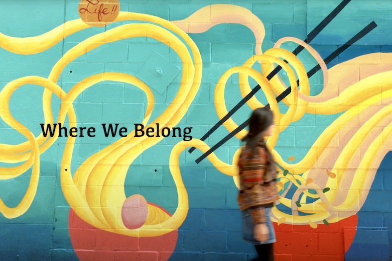

Hi! I'm Cynthia Tu.
I'm a data journalist and multimedia storyteller.
I'm currenly studying Data Journalism at Columbia Journalism School. I am interested in interactive storytelling and data visualization.
I have a passion for telling authentics, human-interest stories of those whose voices are often unheard, and ampliflying their voices with immersive storytelling.
REPORTING PROJECTS

Have artists of color received due recognition at the music industry’s most prestigious awards?
Scraping • Data collection, analysis & visualization • Writing
Comparing soda prices and affordability around the world.
Scraping • Data collection, analysis & visualization • Writing
Find out why your subway is delayed... again.
Scraping • Data collection, analysis & visualization • Maps
One building in the city’s most expensive neighborhood. Two doors. Two addresses.
Pitching • Reporting • Data analysis & visualization • Writing

A mini-documentary of three Asian artists and how they are preserving the culture and history of Boston's Chinatown.
Pitching • Reporting • Directing • Videography • Final cut pro • Writing